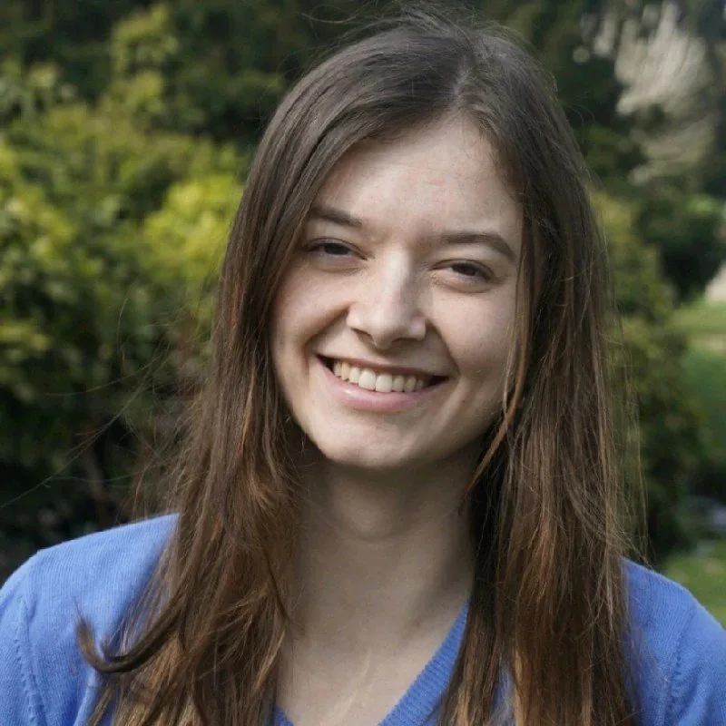
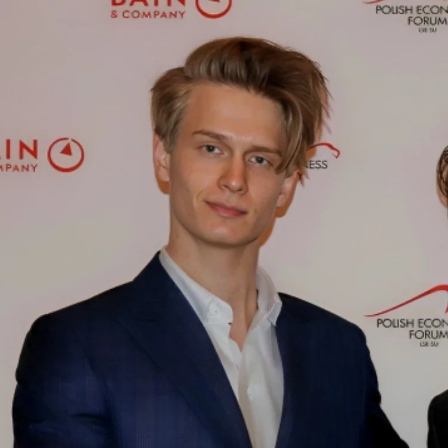
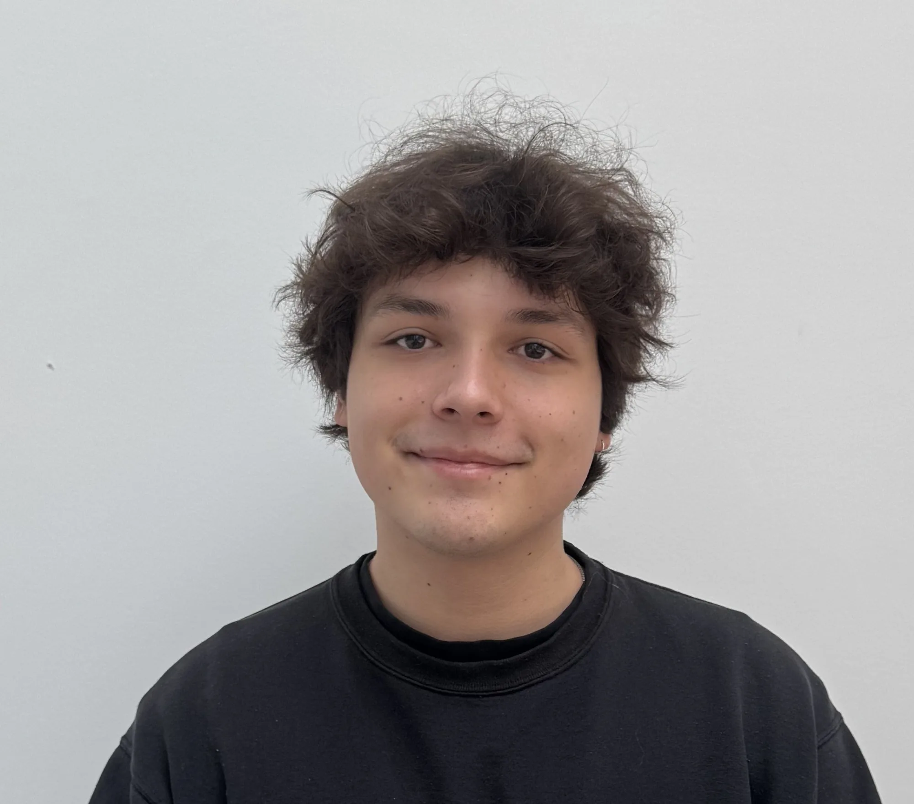
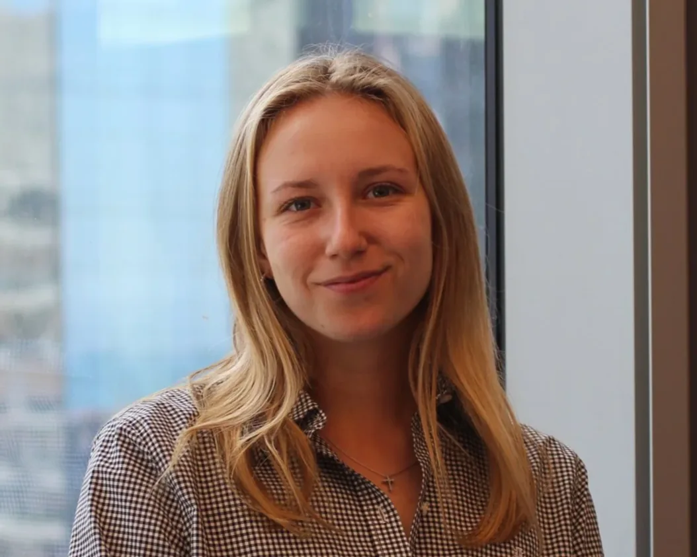
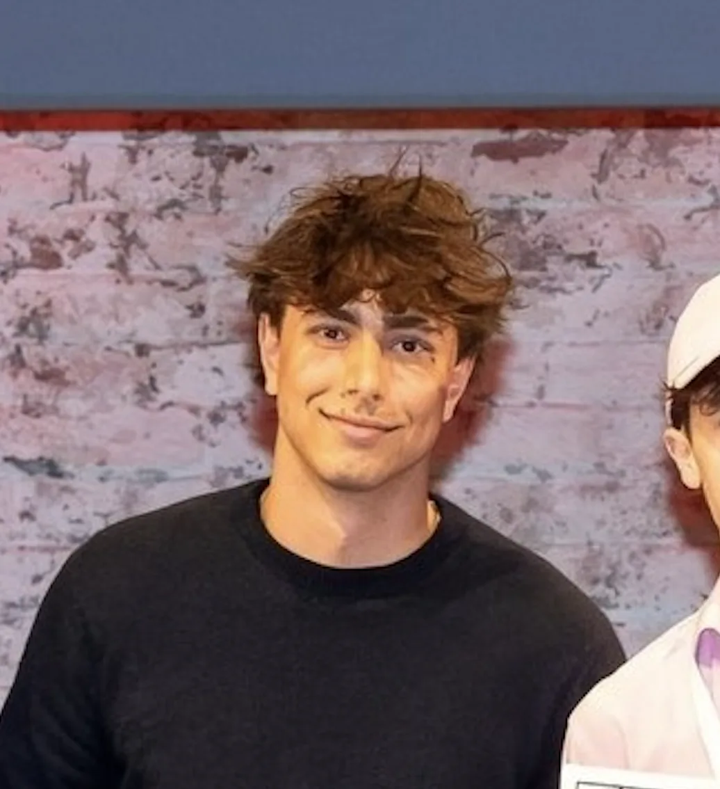
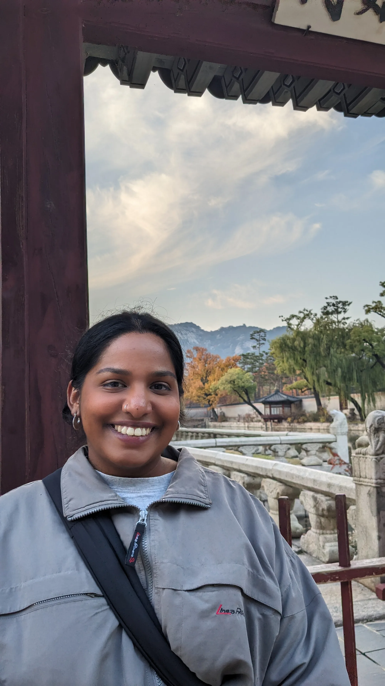

Yoan
President & Head of Product · WU Vienna / QUT
Team & join us
We are 16 students and graduates running mentoring, school visits, the bootcamp, tech and communications in our spare time. Studying abroad, or studied at an international university? You can mentor applicants directly or help us in the PA Austria team.
Who we are
President & Head of Product · WU Vienna / QUT

Country Manager & Head of Outreach · Oxford / Warwick

Head of Postgrad · LSE

Treasurer · Sciences Po

Product team · ESCP

Product team · WU Vienna
Product team · Oxford / American University of Paris

Product team · VU Amsterdam

Outreach & social media · IMC FH Krems
Outreach · Georgia Tech
Outreach · TUM
Outreach · WU Vienna

Outreach
Postgrad · MedUni Innsbruck

Postgrad · Oxford
IT · TU Vienna
Become a mentor
Mentors support students from Austria and South Tyrol with essays, interviews and selection processes. You do not need perfect answers – experience, honest feedback and a little time already help a lot.
Requirements
In the PA Austria team
We organise bootcamps, school visits, study fairs, social media, communications, tech and partnerships. We are looking for people who think along and take ownership.
Areas of work
Programmes & bootcamp
Support participants and help organise the bootcamp.
Schools & outreach
Prepare sessions, contact schools and create materials.
Partnerships
Bring in funders, spaces and experts for our work.
Communications & tech
Maintain application processes, the website and regular updates.
Get in touch